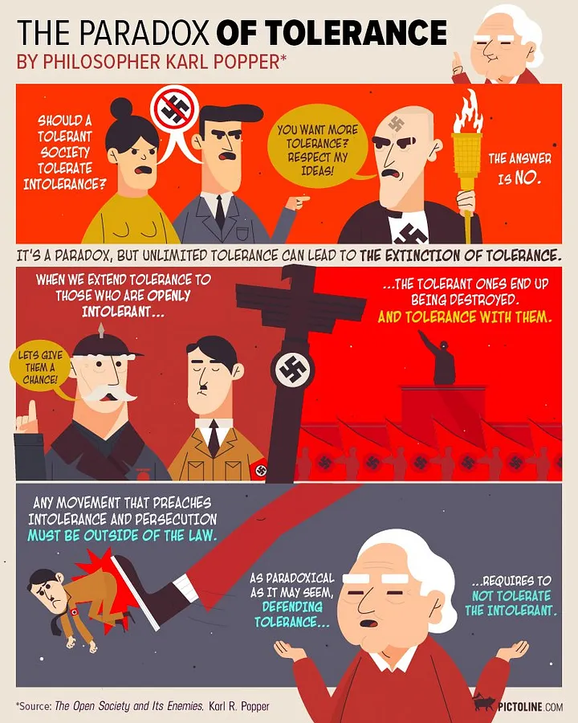

There seem to be more and more claims that "hate speech" should not be entitled to the normal privileges of free speech. To my surprise, one of them is George Lakoff - famed cognitive scientist, philosopher and metaphor expert.
Here’s the admirably clear Lakoff writing a blog post titled “Why Hate Speech is Not Free Speech”.
After that, some thoughts on why he might be wrong.
Lakoff's argument
An extract from the post:
Freedom in a free society is supposed to be for all. Therefore, freedom rules out imposing on the freedom of others. You are free to walk down the street, but not to keep others from doing so.
The imposition on the freedom of others can come in overt, immediate physical form — thugs coming to attack with weapons. Violence may be a kind of expression, but it certainly is not “free speech.”
Like violence, hate speech can also be a physical imposition on the freedom of others. That is because language has a psychological effect imposed physically — on the neural system, with long-term crippling effects.
Here is the reason:
All thought is carried out by neural circuitry — it does not float in air. Language neurally activates thought. Language can thus change brains, both for the better and the worse.
Hate speech changes the brains of those hated for the worse, creating toxic stress, fear and distrust — all physical, all in one’s neural circuitry active every day. This internal harm can be even more severe than an attack with a fist. It imposes on the freedom to think and therefore act free of fear, threats, and distrust. It imposes on one’s ability to think and act like a fully free citizen for a long time.
That’s why hate speech imposes on the freedom of those targeted by the hate. Since being free in a free society requires not imposing on the freedom of others, hate speech does not fall under the category of free speech.
Hate speech can also change the brains of those with mild prejudice, moving it towards hate and threatening action. When hate is physically in your brain, then you think hate and feel hate, you are moved to act to carry out what you physically, in your neural system, think and feel.
That is why hate speech in not “mere” speech. And since it imposes on the freedom of others, it is not an instance of freedom.
The long–term, often crippling physical effects of hate speech on the neural systems of those hated does not have status in law, since our neural systems do not have status in our legal system — at least not yet. This is a gap between the law and the truth.
The replacement problem
You can probably see where Lakoff’s coming from.
This argument has at least two weaknesses, though - and they are easier to express precisely because he’s done the hard work to make everything clear.
The first problem is this: Lakoff's argument works almost as well if you replace "hate speech" with "disagreement speech" – that is, the things we tell people when we find them and their statements significantly wrong. Try this:
"Some people I know - sensitive and not particularly open-minded people - can be quite affected by 'disagreement speech'. It affects their neural system, undermining their sense of certainty about the world and leaving them stressed, distrustful and no longer able to act as easily as before. This can be as tough on them than a physical attack. It imposes on their ability to think and act.
"That's why disagreement speech imposes on the freedom of those targeted by the mild dislike. Since being free in a free society requires not imposing on the freedom of others, disagreement speech does not fall under the category of free speech."
You could do the same for "atheist speech", or many other examples. To take a famous example, Nicholas Christakis seemed to be creating stress, fear and distrust in what he said during the the "Halloween email" incident at Yale. Indeed, a large group of Yale students said that this was exactly what he was doing.
https://www.youtube.com/watch?v=hiMVx2C5_Wg
The second problem is that Lakoff's argument seems to be an example of the (poorly named) fallacy of the undistributed middle. In formal terms this argument runs:
- Violence has a physiological impact.
- Hate speech has a physiological impact.
- Therefore, hate speech is violence.
You can see the problem with this when you substitute in other terms:
- Our cat has fur.
- Our dog has fur.
- Therefore, our dog is a cat.
Yep, poor reasoning.
The line problem
Now, I'm presuming (based on his first three paragraphs) that Lakoff is separating free speech from hate speech in order to argue that the latter warrants forcible restraint of some sort. If there's a point where this has to be considered, I think it's a last resort, a sort of nuclear option, and it suffers from a lot of the same problems as an actual nuclear option.
In particular: where do you draw the line?
Arguments that start "where do you draw the line" are often rightly dismissed. A lot of the time, it's not that hard. But in the free speech debate, this question has a special character.
In Australia we once had a referendum on whether to ban the Communist Party, which at the time was arguing that wealthy capitalists were destroying the country. A lot of the communists' rhetoric was not very generous - it certainly stressed a lot of capital-owners - and one might well have called it "hate speech". Shall we say now that it was not free speech, and that communism should have been banned?
For that matter, what do we say about people who angrily yell "you nazi!" at mere right-wingers, who may be repelled by swastikas? Should these people be forcibly restrained?
As I mentioned, I can see the argument for a line. But I struggle to see how and where we draw it.
Popper's answer
Others have struggled too. One was Karl Popper, whose "the paradox of tolerance" warns against tolerating the intolerant. Popper, of course, had close-up experience of actual nazis and communists. Everyone now cites the paradox:
“Unlimited tolerance must lead to the disappearance of tolerance. If we extend unlimited tolerance even to those who are intolerant, if we are not prepared to defend a tolerant society against the onslaught of the intolerant, then the tolerant will be destroyed, and tolerance with them.”
But rather less people seem to have read the next sentence, where he writes of when we might suppress intolerant philosophies:
“In this formulation, I do not imply, for instance, that we should always suppress the utterance of intolerant philosophies; as long as we can counter them by rational argument and keep them in check by public opinion, suppression would be most unwise.”
In the sentence after that, Popper effectively defends suppressing the intolerant in certain limited circumstances:
“We should claim the right even to suppress them, for it may easily turn out that they are not prepared to meet us on the level of rational argument, but begin by denouncing all argument; they may forbid their followers to listen to anything as deceptive as rational argument, and teach them to answer arguments by the use of their fists.”
As a statement about where to draw the line, this remains pretty good. It’s not free speech absolutism, but it is free speech close-to-absolutism with some defined and well-defended exceptions.
Just remember that Popper was talking about actual German 1930s Nazis, who really did teach their followers “to answer arguments by the use of their fists”. He'd seen communists teach the same thing.
If you follow his advice, you don’t suppress the intolerant merely because you consider them intolerant or hateful. You only suppress them when they have forsaken argument and committed themselves to violence as a first response. You suppress them when they start beating people up.
Even this point may be hard to define, but it’s definitely pointing towards a definition.
The absurdity of brain chemistry arguments
Finally, I'm also unsure what Lakoff or anyone else wins from talking about language that changes the brain, the neural system or physiological effects. Technically any language that affects us does this. All sorts of speech acts affect in some way someone else's ability to act freely.
Sometimes that's exactly what needs to happen. Indeed, there's a name for the process by which we learn to deal with the way that other people's responses affect or brain chemistry. It's called "growing up".
So it's not obvious to me where this sort of neurological claims and language get us.
But I'm not stressed about Lakoff’s opinion; I don't feel my brain chemistry is being deeply altered for the worse. So I'm happy for him to keep on making these arguments.
Well, at least for the moment. I’ll drop him an email if my neurochemistry begins to suggest that he should shut up. I’m sure he’ll do the right thing.
Miscellaneous footnotes
Footnote 1: I originally commented to this effect at Lakoff's site, but it's been in moderation for six weeks while other comments went up, so I'm guessing he didn't see much merit in it.
Footnote 2: Noam Chomsky has a single-sentence argument on these issues which probably works better than all the verbiage above:
"If we don’t believe in free expression for people we despise, we don’t believe in it at all."
Footnote 3: For those who don't know, Popper is just about the most readable philosopher of the past 150 years. Popper's aim in life is to figure out how to set up good societies, not to just play language games. The Open Society And Its Enemies, quoted above, is so good that all of the Popper quotes above are contained in a single footnote. Popper’s footnotes are better than most philosophers’ body text.
Footnote 4: By the way, the cartoon below, which is being widely circulated on social media right now, is arguably pretty much a misrepresentation of Popper. His argument seems to call for tolerance up until the last possible moment. This image seems to be deployed mostly by those who want to stop the far right from marching in the streets.

If you think this graphic seems right and just, just try mentally replacing the nazis with pro-Stalin communists.
Thanks David,
A fine post. When I got the first hint of that neurological argument I smelled a very smelly rat.
I've not seen the video before, though I saw ones like it relating to that couple who'd dedicated their lives to progressive causes who were hounded out of office in some New England (I think) hall of residence.
I can't tell you how it creeps me out. Bullying by those claiming putative disadvantage from within the elite.
A final note, I fear we're at the limits of language here so subtle are the issues. I think it's always worth going through the thought experiments you have substituting various words. Very powerful. But I'd still reserve my position.
For me those students are seizing the opportunity they've been given to bully the old white guy – who appears to be straining every nerve to engage in a way that acknowledges the equal humanity of those he's engaging while they hyperventilate about their feelings. He's embodying the liberal ideal. My visceral reaction to that, the power of the 'aha' moment it gives me counts for more than the formal arguments – although of course even that shouldn't determine the matter on its own.
'Most readable philosopher of the past 150 years'? A bit hyperbolic and 'most readable' does not entail that he is the least flawed or most interesting, I can think of a lot of philosophers more interesting and more readable because of it. He is however one with some of the most easily summarised and understood arguments of a kind that appeal to the more right wing materialists among us.
'As I mentioned, I can see the argument for a line. But I struggle to see how and where we draw it."
You could look at it from a practical point of view -- to what extent hate speech causes effects that matter.
For example, let's say there is a minority group in the community that cops a lot of hate speech as well as general harassment that goes along with it. Let's say they don't care too much and it has no real affect on them. Then it's no big deal. Clearly you can put the line fairly high.
Now let's say there is another minority group, and they get sick of this and feel persecuted, so they hang around together and start acting more and more like entirely their own group. This is now of danger to your democracy, and is going to make your country much harder to govern (why would they cooperate with the police etc?).
So I think the extent to which hate speech laws matter depends on the social context of where you live. In some countries like e.g., Malaysia where there are lots of historical racial problems it probably makes more sense to have a much lower bar than here.
A bit hyperbolic? It's a fair cop, Lethel. You're making me realise I spend too much time trying to dig out the meaning in the obscure stuff. I've been wading through both Wittgenstein and a bit of Bruno Latour recently, and when I opened up The Open Society I was suddenly transported into a different realm - one where the writer seemed to care about transmitting well-defined ideas clearly to the reader. And I was already a Popper fan. So yeah, hyperbole. You got me bang to rights, guv'nor.
Who else is really readable on big philosophical arguments, in your mind? I'd go for Martha Nussbaum in full flight, if she makes the cut as a major philosopher; that famous Butler essay alone makes her a champion of philosophical clarity. Peter Singer's popular stuff is very clear, so maybe I should read the Singer book someone gave me for Christmas. Rawls and Anthony Flew I recall being digestible at the time, but that time was long ago. Does Daniel Dennett qualify as a major name? Also I haven't read
muchanything by Derek Parfit or David Lewis, and people rave about them.I've watched the video a few times, and my reaction is the same as yours. It's the liberal ideal under assault, captured on camera. As a result of this, Christakis was effectively driven out of Yale, along with his accomplished wife.
Once you understand Christakis's accomplishments and stature, it's even worse.
Amongst US tertiary students, there is now less support for free speech as an ideal than ever before. If the normal pattern holds, the same may soon happen here. Apparently we need to make the case for free speech anew, and so this is a small attempt.
David, I recognise where you're coming from, but you commit some terrible gaffs in the way you attack Lakoff's argument.
Firstly, "disagreement speech" leaves the debate open. Hate speech does not. There is a big difference from saying "the world would be a better place if did not exist" vs " causes harm every time they do " or "the world would be a better place is was not acted on". One is existential, the others are about outcomes and values.
Secondly, your argument about the undistributed middle is wrongly constructed. Lakoff refers to violence not as a thing that "has a physiological impact", but a thing that is defined by the strong use of force. Anything that uses force strongly can be seen as violence, and so Lakoff's argument cannot be destroyed by your false construction. In this respect, the poor reasoning is your own.
Thirdly, I believe that you misrepresent Popper's argument. Although Nazis were taught to answer arguments with their fists, that wasn't the only time they were encouraged to use their fists. Their teaching was to use their fists in many other situations, and so the teaching itself must be repressed, not just argued against. Otherwise the fists also come out whenever there is no-one to prevent it, and no argument.
The line is still hard to draw, but Lakoff considers that any behaviour that might reasonably be expected to produce violence is the wrong side of the line. As an example, if my brain sends a signal asking my fist to hit you in the face, is my fist responsible? Or is my brain responsible? All the brain did was to emit a communication, and we wouldn't want that communication to be regulated, would we? Lakoff's point is that thought does not exist in a vacuum or outside the physical body, in a disembodied Cartesian realm of spirit or mind. No, any idea which enters my head and which I accept as normalised by society is a factor in my future actions, whether or not I even fully agree with the idea. I am not a "fully conscious" or fully rational being - in the sense of strict mind/body duality. Nobody is - we are unitary organisms, not a disembodied spirit enlivening a mechanistic body. Yet the Cartesian myth is still a terribly prevalent and damaging one even in our modern society. The unitary person must be restrained from violence.
Nazism is a social organism, as much as I am a physical organism. As such, it is warranted to restrain this organism from violence.
This website failed to escape < and %gt; in my previous post. It should say "... if <person X%gt; did not exist..." and "<person X%gt; causes harm every time they do <thing Y%gt;”.
Gah, this time, I failed:). This website failed to escape < and > in my previous post. It should say "... if did not exist..." and
" causes harm every time they do ”.
Thanks Clifford. A couple of questions.
* Re Nazism as a social organism: would you feel the same way about suppressing speech by members of the Communist Party of Australia calling for violent revolution against the capitalist ruling classes?
* Re Popper: If I'm misrepresenting him, and if you have the time, could you give an explanation that refers to Popper's own writings? I'm not trying to be cute here. I've read quite a lot by Popper over the years, and I am trying to represent him as accurately as I can, but I would genuinely welcome any extra illumination.
Conrad, the Malaysian case does open up a very fruitful line of thinking. Thank you.
David Cole in the New York Review of Books
Regarding the Communist Party, to the extent that their speech was likely to cause physical harm through incitement of violence, yes, of course... and any other such group, including where the violence is culturally justified (i.e. genital mutilation, forced marriage, etc).
Regarding Popper, I don't have time to search my references. I think you accurately represents him in regard to what you quote, but you focus on Nazi behaviour in debate, disregarding the other behaviour that their position justifies. Perhaps it could be argued that Popper does the same...
"While each group’s experiences are distinct, many have suffered grave discrimination, including Native Americans, Asian-Americans, LGBT people, women, Jews, Latinos, Muslims, and immigrants generally. Should government officials be free to censor speech that offends or targets any of these groups?" I suspect that all the students in your linked video would answer yes.
yes, I agree that Lakoffs arguments are disingenuous: by claiming special knowledge via a neurological description rather than the equally valid but much simpler statement that 'being disagreed with is painful', he muddles the waters and adopts a holier-than-thou position. Also, there is no future in a legal environment that allows us to shut down all speech that we find painful.
The identity politics and intolerance of the 'we feel hurt' crowd invites a backlash.
http://clubtroppo.lateraleconomics.com.au/2013/08/15/hurt-and-truth/